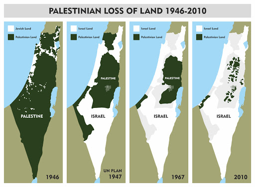

收录于合集

作品简介
【作者】 Martin Indyk, 外交关系委员会杰出研究员，前美国巴以谈判特使。
【编译】 朱文菡（国政学人编译员，外交学院博士生）
【校审】 丁伟航
【排版】 余姣
【美编】 游钜家 ****
【来源】 Indyk,M.(2021) The U.S. Can Neither Ignore nor Solve the Israeli- Palestinian Conflict: Washington Must Actively Manage a Dispute It Can’t End. Retrieved From Foreign Affairs website: https://www.foreignaffairs.com/articles/middle-east/2021-05-14/us- can- neither-ignore-nor-solve-israeli-palestinian-conflict
【归档】 《国际关系前沿》2021年第5期，总第32期。
期刊简介
《外交事务》（ Foreign Affairs ），创刊于1922年，是美国外交关系委员会发布的国际关系和美国外交政策的美国杂志，被誉为“美国最具影响力的外交政策杂志”之一。根据2018年的期刊引文报告（Web of Science）, 该期刊的影响因子为4.390，在“国际关系”类别的91种期刊中排名第3。
美国既不能忽视也不能解决巴以冲突：华盛顿必须积极管控这场它无法解决的争端
The U.S. Can Neither Ignore nor Solve the Israeli-Palestinian Conflict: Washington Must Actively Manage a Dispute It Can’t End
Martin Indyk
拜登政府履职以来，打算对巴以冲突采取较前任更为低调的态度，这在上周三举行的疫情新闻发布会上已经初见端倪。当时，以色列和哈马斯之间的冲突已持续四天（译者注：5月8日凌晨以色列警察对阿克萨清真寺内部分抗议者使用高压水枪、橡皮子弹和催泪瓦斯，当晚双方在东耶路撒冷爆发冲突）。拜登谨慎地回答了有关冲突的问题，称他与以色列总理内塔尼亚胡谈过，以色列有权自卫，并表示他希望冲突尽快结束。
（图片来源：法新社，平日里阿克萨清真寺和耶路撒冷老城就处于以色列警察的治安管理下）
此外，美国国务卿布林肯也称自己与以色列总统和巴勒斯坦民族权力机构主席阿巴斯（阿布·马赞）进行了沟通。他还提到，他将派经验丰富的中层官员哈迪·阿姆尔到以色列与各方取得联系。
与此同时，加沙地带也对以色列城市展开报复，多座城市遭到夜间火箭弹袭击，犹太人与阿拉伯人社群发生暴力行为。包括儿童在内的双方平民死亡人数都在上升。
民主党的激进势力正在愈发强烈地呼吁华盛顿积极作为，不仅要阻止冲突升级，还要结束整个冲突。
我们上一次见到以色列和哈马斯之间的冲突还是在2014年，我们知道那次冲突是如何升级的。哈马斯在伊朗支持的巴勒斯坦伊斯兰圣战组织的帮助下，不加区分地使用火箭弹。以色列进行了不对等的报复。美国表示支持，欧洲也仅仅是口头上劝阻。哈马斯认为其已经表明了自身立场。最终，双方在卡塔尔和埃及的“无为”（“quiet for quiet” ）调解下停火。当双方民众还在埋葬死者、清理废墟、恢复正常工作时，以色列国防军（IDF）和哈马斯的卡萨姆旅（Ezzedeen al- Qassam Brigades）已经开始为下一轮冲突做准备。
拜登政府迄今为止的做法表明，华盛顿将欣然接受这样的结局。毕竟它还有其他更重要的优先事项——疫情、经济复苏、气候变化、中国的崛起、伊朗的核野心。 拜登对内塔尼亚胡行动的遵从，展现了这种态度的转变，即将处理巴以冲突的努力留给党内关心这项事务的人，而在国家层面上，美国将从旨在结束巴以冲突转向阻止双方过分剑拔弩张。
拜登可以做更多吗？毕竟，每一场危机都孕育了一个机会。这次的情况是否会产生这样一个充满可塑性的时刻，即华盛顿只要加强介入，美国就能朝着实现其公开宣称的解决巴以冲突的“两国方案”取得进展？
迫于现实，而非选择
**
**
不幸的是，答案是否定的。 作者认为，现状其实很适合冲突双方 （译者注：文中冲突双方指以色列当局和哈马斯方面，不包括名义上控制西岸的巴勒斯坦民族权力机构） ，且双方都没有兴趣改变。 然而，哈马斯对取消巴勒斯坦选举的做法深感不安，因为它寄希望于通过选举将其影响力扩大到西岸；利用东耶路撒冷的阿拉伯人和犹太人的社群冲突，扩大其在那里的影响力。它做了此前不可想象的事，并向耶路撒冷发射了火箭弹。而这又激怒了内塔尼亚胡，他可以接受哈马斯统治加沙地带，但不接受其势力触及约旦河西岸，更不用说东耶路撒冷了。
然而，双方在本轮的目标都极其有限。哈马斯希望加强其在巴勒斯坦人中的地位；以色列希望重建其对哈马斯攻击以色列民众的威慑能力。双方都不希望让美国代理（broker）一个“两国方案”。哈马斯致力于使以色列不存在的一国解决方案；内塔尼亚胡致力于三国解决方案，由哈马斯统治加沙地带，巴勒斯坦民族权力机构管理约旦河西岸飞地。
这一冲突的第三方阿布·马赞（Abu Mazen）希望看到美国重新参与，因为这将有助于使他再次获益。四个月来，他徒劳地等待着拜登的电话；当前危机最终为他迎来了国务卿的电话。但是美国的谈判代表对付阿布·马赞有足够的经验，知道他无法接受达成“两国方案”所必需的妥协。在阿布·马赞四年总统任期的第17年（译者注：2004年阿拉法特去世；2005年阿布·马赞当选巴勒斯坦总统，次年立法委大选中其带领的政党法塔赫败给哈马斯，巴内部分歧公开化；2009年阿布·马赞总统任期到期，但由于加沙危机，其仍在国际社会支持下留任总统至今），这位名义上主持着一个严重分裂政权的85岁政治老人很清楚，他对以色列的任何让步都将受到哈马斯的谴责，使他无法以拒绝妥协巴勒斯坦人权利的领导人形象步入史书。
**
**
（阿布·马赞）
在最近的冲突爆发之前，以色列有望成立一个新政府，以结束内塔尼亚胡的统治。“拥有未来”党（the Yesh Atid party）领袖拉皮德（Yair Lapid）和犹太民粹党（the Yamina party）领袖班奈特（Naftali Bennet）即将组建一个左翼和右翼联盟，这个联盟将依靠阿拉伯政党的支持来获得多数选票。然而，犹太人和阿拉伯人之间爆发了一系列令人震惊的群体性暴力事件，从耶路撒冷蔓延到以色列的其他城市。这场冲突至少会使组建政府的工作变得格外复杂。以色列现在似乎更有可能在两年内举行第五次选举，之后，当前危机产生的任何可塑性都将会增强。
即使这个预测被证明是错误的，一个联合政府真的出现了，其总理也将是班奈特。在以色列的领导人中，他是一个独立的巴勒斯坦国的最坚定的反对者，也是吞并约旦河西岸的最忠实的支持者。
换句话说，拜登政府的本能反应是正确的。冲突需要管控，因为解决冲突的条件根本不存在。管控冲突，并非因为其比解决冲突更优先，而是迫于无从选择的现实情况。美国前国务卿克里试图单靠美国意志改变现实的努力收效甚微，特朗普政府高级顾问库什纳试图制裁巴勒斯坦人并给以色列一张空头支票的尝试也被证明是失败了。
向前迈进
然而，管控冲突并不意味着置之不理，尽管拜登政府从一开始就无意中暗示它想这样做。华盛顿目前还没有派遣驻以色列大使（甚至是临时大使）或驻耶路撒冷总领事来对付巴勒斯坦人。如果它这样做了，它可能会更好地领导这场冲突的爆发。相反，这项工作留给了糟糕的国务院中层部门。 作者认为，拜登政府在更高层次的干预下，让内塔尼亚胡阻止了在东耶路撒冷的驱逐、游行和以色列警察的暴力，这值得赞扬。作者认为，尽管美国的调解既少又晚，但它显示了及时的高层接触的合理性。
**
**
现在，可能需要更多的高层干预来给双方台阶下。哈马斯似乎已经愿意这样做了。在未来的几天里，一旦以色列国防军（IDF）完成对哈马斯基础设施的摧毁，并尽可能多地消灭了其武装组织的领导人，内塔尼亚胡很可能也会愿意收手。他不想两年内的第五次选举成为一场激烈的战争选举，毕竟他已经被指责造成了对以色列人日常生活的破坏。
但一旦停火，拜登政府将需要为巴勒斯坦人描绘一个政治蓝图——给他们一种可以像以色列人一样最终将享受国务卿布林肯最近承诺的“自由、安全、繁荣和民主的平等对待”的希望。作者认为，冻结犹太定居点的扩张，特别是使定居点前哨合法化，将是一个很好的开始。敦促以色列避免在东耶路撒冷驱逐巴勒斯坦人和拆除他们的房屋也很重要。
在巴勒斯坦方面，作者认为，应鼓励阿布·马赞重新安排选举时间。巴勒斯坦人对有机会在15年来首次投票支持他们的领导人感到兴奋。当选举被取消时，他们感到的失望导致了暴力事件的爆发。在选举准备期间，拜登政府采取了不可知论的立场。是时候了，拜登政府应该敦促选举委员会明确表示，只有那些放弃暴力的候选人才能按照《奥斯陆协议》的规定参选。它应该确保以色列履行在这些协议中的承诺，允许东耶路撒冷阿拉伯人投票。
正如最近的暴力爆发所显示的那样，管控巴以冲突就像骑自行车：如果你不向前踩踏板，你就会摔倒。从这场危机中走出来，拜登政府将需要推动一个帮助重建信任和希望的进程。考虑到崎岖不平的地形，沿着这条道路前进的进展一定是缓慢和渐进的。但在目前的情况下，日积跬步比无视或冒进更有希望。
译者评述
巴勒斯坦问题由来已久，而近年来已经逐渐被边缘化。随着越来越多的阿拉伯国家与以色列关系正常化，巴勒斯坦正陷入其熟悉的孤立无援的境地。国际社会对于巴勒斯坦的声援常常口惠而实难至，而这也与巴勒斯坦尴尬的国内状况不无关系。
因领土问题迟迟无法解决，巴勒斯坦严格意义上只拥有联合国观察员国身份。以色列通过数次中东战争在地区站稳脚跟的历史，也是巴勒斯坦人丧失家园的历史（见下图）。随着阿拉伯国家与以色列休战，巴解组织走上谈判桌，巴勒斯坦人所拥有的谈判筹码也在不断流失。1974年，阿拉法特在联合国大会演讲中说，“我今天来到你们之中。我一手拿着橄榄枝，一手握着革命的枪。你们不要看着橄榄枝从我的手中滑落！”阿拉法特没有扔下他的橄榄枝，却彻底扔下了手中的枪。在此后的和平进程中，双方的谈判艰难但仍不断向好。直到世纪之交，拉宾遇刺，阿拉法特病亡，巴以双方的温和派式微。现任右翼总理内塔尼亚胡赢得了随后的选举，开始长期盘踞以色列政坛，加沙地带此后也为激进的巴勒斯坦伊斯兰抵抗运动（哈马斯）所控制。扔下了枪的巴解组织在阿布·马赞带领下渐渐失去对西岸的实际控制，连税收都常常由以色列政府代理，对其腐败无能的指责四起；捡起了枪的哈马斯虽然赢得了2006年立法委大选、占据了加沙地带，但其治下的加沙地带充满了仇恨与暴力；在宣扬锡安主义的以色列屋檐下生存的阿拉伯人则长期处于二等公民地位。

此次巴以斋月冲突导火索同样是领土问题。居住在国际法公认属巴勒斯坦领土的东耶路撒冷谢赫贾拉区的巴勒斯坦人，面临以色列最高法院根据以色列法律做出驱逐判决的可能。这一即将到来的驱逐判决引发公愤，演变成斋月期间以色列警察对阿克萨清真寺内抗议者的暴力清场，并进一步演变成至今为止以色列对加沙地带的持续空袭。《日内瓦公约第一附加议定书》第48条明确指出，“冲突各方在任何时候都应区分平民人口和战斗人员，区分平民目标和军事目标，应只针对军事目标采取行动”。以色列国防军和哈马斯方面显然都违背了这一原则，在双方的悬殊实力下和以色列对哈马斯停火谈判拒绝后，双方冲突在公共舆论看来已发展为以色列对加沙地带的“单方面屠杀”。
在本文发表（本文于5月14日发表于“外交”网站）次日，内塔尼亚胡在电视讲话中宣称将继续对加沙地带进行空袭，并于当日轰炸了加沙境内一栋驻有美联社、半岛电视台等多家国际媒体的大楼。由于认定哈马斯成员隐藏在平民中，以色列在掌握精确打击能力的前提下仍然轰炸加沙“非战斗人员”生活区和基础电力水利设施，无视停水停电可能造成的附带伤害。拜登政府对此噤声，这样的鸵鸟政策无疑引发了党内激进人士如科尔特斯（Alexandria Ocasio- Cortez）等人的批评。作为“保护的责任”（R2P）原则的积极拥趸，民主党在又一次卢旺达人道主义危机面前置身事外。本文作者指出，拜登政府的低调无为除了由于疫情等更优先事项，还在于巴勒斯坦问题本身的瓶颈：安之若素的冲突双方（以色列和哈马斯）和坐收渔利的第三方（阿布·马赞）都不打算真正推动“两国方案”。
更深层次地，本次斋月冲突正值利益攸关方的重要选举来临之际——对于以色列，是两年内的第五次大选和内塔尼亚胡的失利；对于巴勒斯坦，是15年来的又一次大选，加沙的哈马斯胜算高过西岸的法塔赫；对于与哈马斯关系密切的伊朗，是哈梅内伊年事已高、伊核协议前途未卜背景下的总统大选。在诸多不确定性下，拜登政府确实难以筹谋。
与无所作为的美国形成鲜明对比的是积极作为的中国。本次斋月冲突也正值中国担任安理会轮值主席，国务委员兼外长王毅从公正的立场指出，巴勒斯坦问题始终是中东问题的核心，并阐明中方主张：停火止暴是当务之急；人道援助是迫切需要；国际支持是应尽义务；“两国方案”是根本出路。作为曾在上世纪60年代阿拉法特孤立无援之际雪中送炭的老朋友，中国正在践行本文作者所期待看到的作为，推动冲突双方止戈停战，“脱我战时袍，著我旧时裳”。
文章观点不代表本平台观点，本平台评译分享的文章均出于专业学习之用, 不以任何盈利为目的，内容主要呈现对原文的介绍，原文内容请通过各高校购买的数据库自行下载。
好好学习，天天“在看”
国政学人
支持学术公益与知识传播
微信扫一扫赞赏作者 __赞赏
已喜欢，对作者说句悄悄话
取消 __
发送给作者
发送
最多40字，当前共字
上一页 1/3 下一页
长按二维码向我转账
支持学术公益与知识传播
受苹果公司新规定影响，微信 iOS 版的赞赏功能被关闭，可通过二维码转账支持公众号。